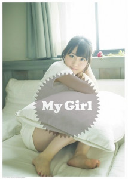

2017.04.20
2017.04.20
小倉 唯 「My Girl Vol.18」巻頭特集に登場！【4/20情報更新】
小倉 唯が4月26日(水)発売の「My Girl Vol.18」の表紙巻頭特集に登場します！
撮り下ろしフォトページ＋ロングインタビューなど、計20Pの特集！

↑ NEW!!
「My Girl vol.18 “VOICE ACTRESS EDITION”」
【発売日】2017年4月26日(水)
【1st Cover(表紙)】小倉 唯
＜CD＆DLでーたHP＞
https://www.cddata-mag.com/